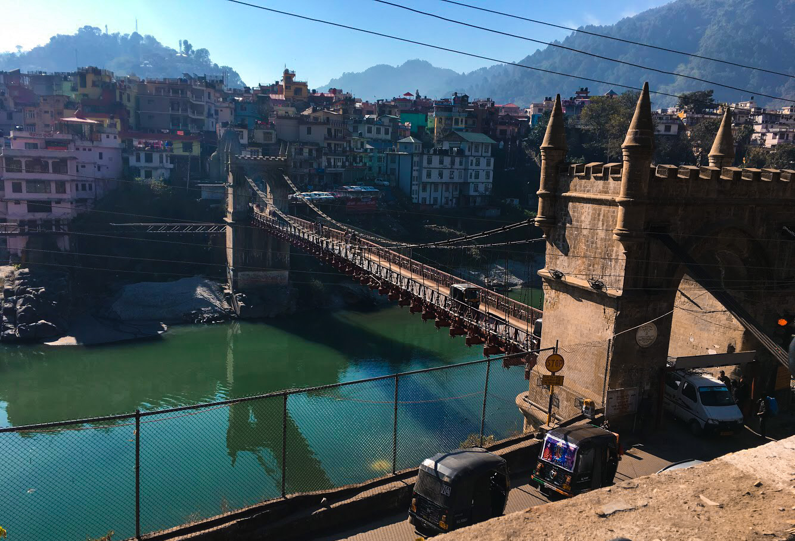

Introduction
Mandi district (earlier known as Mandavya Nagar) is one of the central districts of Himachal Pradesh state in northern India. Mandi town is the headquarters of Mandi district. The town has mythological and historical significance and boasts of a unique temple architecture. It is referred to as Chhota Kashi as there are many ancient temples in the city and on the banks of river Beas. The Beas flows through the town and hills, which makes this town more scenic. It has a serene ambiance though the modern development has made its inroads here in infrastructural developmen The town is an important commercial hub of the state. It is a major transit route to Kullu-Manali and other adjoining places from NH-21 (Chandigarh-Manali highway) and NH-20 (Pathankot-Mandi highway). Sundarnagar is one of the emerging towns of the distri The main native language is Mandeali. As of 2011 it is the second most populous district of Himachal Pradesh (out of 12), after Kangra.
History And Geography
Mandi district was formed after the merger of Mandi State (Mandi) and Suket State, two princely states on 15 April 1948. This coincided with the formation of the Union territory of Himachal Pradesh. The state attained its full statehood later. Mandi town was named after its resident saint Mandavya Rishi. Mandi is almost at the geographical centre of Himachal, lying along the left bank of the river Beas in the foothills of Shivalik ranges. The town has an altitude of 760 metres (2,495 ft) from the sea level. Comprising the two erstwhile states of Mandi and Suket, Mandi derives its name 'mandi' or 'market' as it was a major trade route from Ladhakh to locations in Punjab such as Hoshiarpur and other places. Here, during the days of yore, the pious rishi, Mandavaya, performed long and severe penance and practised austerities on his body, on the bank of the river Beas, near the present Mandi town. The story indicates the antiquity of this beautiful temple town, surrounded by hills, clad in pines. There is a large plain which has grain fields and orchards, between Mandi and Sundernagar. Known for its temples, Mandi is the home to a number of beautiful carved stone edifices each with an elaborate shikhara, or spire, among them Bhutnath, Trilokinath, Panchvaktra and Shyamakoli at Tarna hill. Also on the hill, there is a new temple dedicated to Tarna Devi, overlooking the valley and giving a panoramic view. The Beas valley is broad near Mandi, and there are a number of striking vales such as those of Uhl and Ran Khad. The fruit tree cover in Mandi is about 15 percent of the total area under fruit tree cover in Himachal Pradesh. Mandi raw silk has acquired wide fame and the rock salt mines at Drang and Guma are special features of the district economy. With abundant deposit of rock salt and limestone, possibilities are being investigated for the existence of magnasite coal and china clay. A transit for visitors to Kullu, Manali, Lahaul and Spiti, Dharamsala, Kangra, etc., it is approachable from Pathankot (215 km or 132 mile), Chandigarh (202 km or 125 miles) and Shimla (158 km or 98 miles). On either side of the road, there are rock hill sides rising perpendicularly to more than 300 metres (1,000 ft).
Lakes of Mandi district
Rewalsar Lake Prashar Lake Macchial Lake Pandoh Dam Barot Sundar Nagar Kamlah Fort Kamru nag lake
Demographics
According to the 2011 census Mandi district has a population of 999,518, roughly equal to the nation of Fiji or the US state of Montana. This gives it a ranking of 446th in India (out of a total of 640). The district has a population density of 253 inhabitants per square kilometre (660/sq mi). Its population growth rate over the decade 2001-2011 was 10.89%. Mandi has a sex ratio of 1012 females for every 1000 males and a literacy rate of 82.81%.
Subdivisions
Villages in the district include Janjheli. It is near Kullu-Manali, around 80 km from Bhunter Airport, 90 km from Kullu and 67 km from Mandi. It has thick forests and springs and is a trekking/hiking outpost. Shikari Devi is a tourist spot. It hosts Himachal Cultural Village, an ethnic village highlighting the culture of Himachal Pradesh.
Places of interest
The historic town of Mandi (800 m) is built along the banks of the river Beas. It has long been an important commercial centre, and the sage Mandvya is said to have meditated here. This one-time capital of the princely state of Mandi is a fast developing town that retains much of its original charm and character. Today, it is a district headquarters. Mandi is renowned for its 81 old stone temples and their enormous range of fine carving. Because of this, it is often called the "Varanasi of the Hills." The town has the remains of old palaces and notable examples of ‘colonial’ architecture. Mandi is the gateway to the Kullu valley and acts as the base for several exciting excursions.
Dev Balakameshwar Temple
Himachal Pradesh – ‘the land of gods’, famous by the name ‘devbhoomi’ all over the world. This state is said to be protected and sheltered by the power of numerous local deities. These deities possess some peculiar personality traits and have their own individual entity. Every region in Himachal believes in a distinct deity. All the faith of the local people is vested in these local gods called ‘devta’ in the regional language.Some of the deities and their characteristics that distinguish them from each other are discussed below- Dev Balakameshwar temple is 13 km from Mandi and located in its very heart, Practically synonymous with Mandi located in its very heart Dev Balakameshwar Temple, located in village & po tikkar.
Bhootnath Temple
Practically synonymous with Mandi and located in its very heart, Bhootnath Temple is as old as the town itself and dates to the 1520s. In March, the festival of Shivratri is a major event and the Bhootnath Temple is its focus. For an entire week, the town celebrates the arrival of hundreds of local deities on elaborately decorated palanquins.
Rewalsar Lake
About 25 km from Mandi, 14 km from Ner Chowk is the Rewalsar lake, famous for its floating islands of reed. It is believed that all seven of them can be moved by prayer or breeze. There are three shrines here, a Buddhist monastery, where elaborate rituals are performed, a Sikh gurudwara and a Hindu temple. It was from this place that the sage Padma Sambhava, a zealous teacher of Buddhism, left as a missionary to preach the doctrine of "the enlightened" in Tibet. Lying in a mountain hollow, the lake is held sacred to all three communities; boating facilities are available. Tourist inn maintained by HPTDC provide accommodation and Indian cuisine.
Prashar Lake
Prashar Lake lies 49 km north of Mandi, with a three-storied pagoda-like temple dedicated to the sage Prashar. it was made in 13-14th century by MAHARAJA BANSEN. The temple had title bit tilted due to heavy earthquake and similar to the Leaning Tower of Pisa. There are 2 annual fairs at the holy temple respectively in April and June.
Joginder Nagar
The large hydro-electric project in Joginder Nagar has an electric trolley takes the visitor up the steep, rocky face of 2,500 metres-high (8,202 ft) mountain and drops sharply on the other side to Barot, where the reservoir is. The railway line goes up to the power station, the water rushing down from the reservoir at Barot in the Uhl river through penstock pipes going down nearly a thousand metres (3,280 ft). For tourists who go up to Barot by the trolley, there is a comfortable rest house of the electricity department. The roads extend beyond to Mandi and passes the Larji gorge to the Kullu valley. Bassi power station is 8 kilometres from Jogindernagar. Next to it is Machhial where fishing is not permitted as it is considered a holy sacred spot. It is a popular as a feeding spot for fish. Lad-Bharol: 25 km from Joginder Nagar very beautiful town, santan dati maa simsa mata mandir in nearby Lad-Bharol, 7 km from Lad-Bharol, Nageshwar Mahadev Coudh is near Bharol. The Triveni Mahadev where three rivers Bias, Binwa and one local are meeting with each other. A very ancient Lord Shiva temple is there and very scenic beauty of the intersecting of three rivers.[clarification needed] Santan Datri Man Shimsha (Sharda) is at Village Shimashjust on the top of hill of Triveni Mahadev. Childless women pray and sleep inside the temple in Navratras and maa blessed them with different fruits indicating boy or girl. Nageshwar Mahadev Kud is in the foothills of village shimash and there is ancient goofa in which lot of natural shivlings. A unique and natural combined shivling of Shiva and Parvati, a unique and natural Sculpture of Nandi Bail and finally a unique and natural shivling with NAG; that is why it is known as Nageshwar Mahadev.
Sundar Nagar
Famous for its temples, 26 km from Mandi towards Shimla and at a height of 1,174 metres on the raised edge of a fertile valley, the beautiful town of Sundar Nagar is known for its shady walks amidst towering trees. On top of a hill and visited by thousands of devotees every year, is the Sukhdev Vatika and temple of Mahamaya. The biggest hydro-electric project in all Asia, the Beas-Sutlej project, irrigating nearly one-fourth of the northern plains of India, has brought unprecedented prosperity to Sunder Nagar. The Beas-Sutlej link colony is the biggest colony in Himachal Pradesh.
Janjehli
At a distance of 80 km from Mandi, Janjehli is a paradise for hikers, offering treks up to a height of 3,300 metres. All the road is motorable and fun to ride. The road is connected to Karsog which remains open all seasons except some weeks of winter. It takes about 3 hours to reach here from Mandi via Baggi, Chail Chowk and Thunag (Tehsil Headquarters). In the midst of thick forest, forests (15 km from Gohar) is Bajahi. There is a beautiful and well-furnished rest house to stay overnight. From here Janjehli is a scant 20 km away through bridle path. Chindi and Karsog are nice places for meditation. Janlehli is popular for adventure activities like-trekking, night safari, mountneering, skiing etc. At the distance of 10 km from janjehli is the Shikari Mata temple. The temple is all about Goddess "Shikari Devi" and people visits here in masses to accolades for their well being. It is a beautiful and scenic place with mountains which seem to be avoiding each other but the clouds more often get them in touch. Thunag is a beautiful place to visit, despite Tehsil Headquarters it is home to a stunning rest house with glorious location and thick canopy of Deodars, addition to that native land of Sh. Jai Ram Thakur ( Chief minister of Himachal Pradesh). Jarol is beautiful place between Janjehli and Thunag.
Barot
Barot is a picnic spot and tourist location in Mandi district in the Indian state of Himachal Pradesh. It is situated 40 km from Jogindernagar and 66 km from Mandi, the district headquarters. The road to Barot branches off at Jogindernagar-Mandi high ways and from Jogindernagar the distance is 40 km. It is sometimes possible to use the trolley from Jogindernagar which reduces the distance to 12 km. The route includes terraced fields and thick cedar forests, rising to Jhatingri at the hilltop. The remains of the summer palace of the former rulers of Mandi are located here.Through the little village of Tikkan, the road carries on to Barot. The town has a range of outdoor activities, including a trout breeding centre from where fish are released into the Uhl. A 30 km section of the river is used for angling. Barot also forms the gateway to the Nargu Wildlife Sanctuary which lies across the Uhl. The sanctuary is home to the monal, black bear and ghoral. Within it are forest rest houses at Thaltuckhod and Silbandhwari. Through woods of cedar and pine a trek route cuts across the sanctuary to Kullu.
Kotli
At a distance of 22 km from Mandi (Mandi-Jalandhar NH-70) is a Tehsil of Mandi district. Arnodi "khadd" flows along the tungal valley to meet the river Beas at kun ka tar. Famous temples are Shiv temple Kotli, Racehra dev temple kotli at Racehra hill, Janitri devi Temple at Janitri Hill, Jhagru Dev Temple, Kasla dev and kamrawh dev temple kotli, surgani devi temple, Mahan Dev temple, Tej bahadur singh Temple, tarokda wali devi temple, and Nagni devi temple. Famous fairs are the Saigaloo nar wadi, Mahan Dev, and Janitri Devi.
Dharmpur
Dharmpur is mainly famous for its hot weather. At a distance of 68 kilometers from Mandi on (Mandi-Jalandhar NH-70) Dharmpur is a sub-tehsil of Mandi district. It is mainly famous for temple of Baba Kamlahia, Jalpa Mata and 'Kandhapattan' famous for crematorium are located in Dharmpur sub-division.